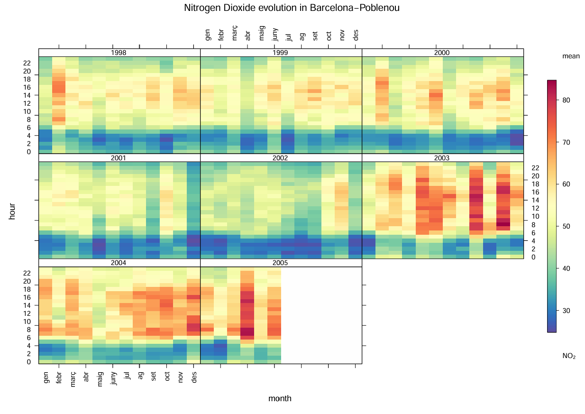

This are the graphics that we have done.The following graphs show different visualizations of air pollution data. Each plot helps understand how pollutant levels change over time and under different environmental conditions.
